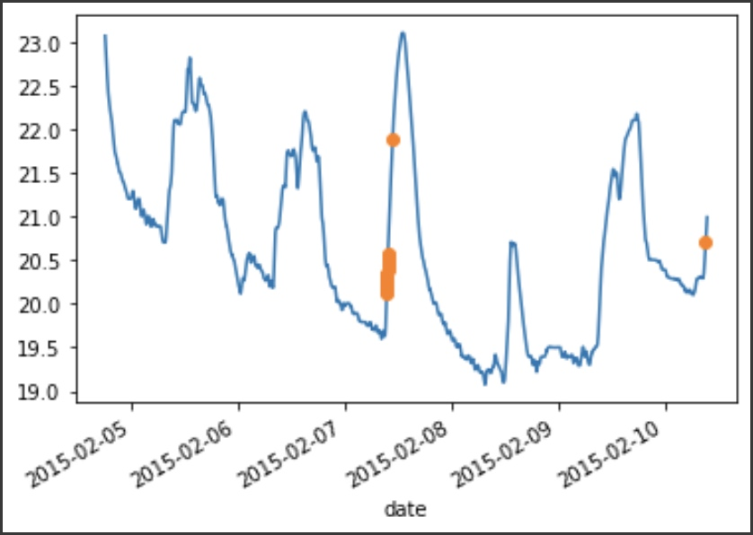
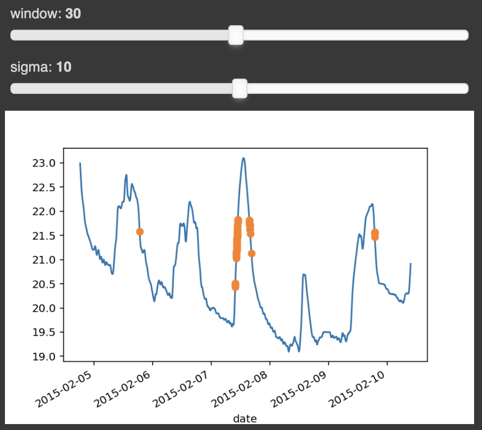

Use .servable() to make object show in a new seperate web page.
Then use panel serve xxx.py --show --autoreload to make script run.
Also, use .show() to direct show in browser. python xxx.py
Build an App
import pandas as pd; import numpy as np; import matplotlib.pyplot as plt
csv_file = 'https://raw.githubusercontent.com/holoviz/panel/main/examples/assets/occupancy.csv'
data = pd.read_csv(csv_file, parse_dates=['date'], index_col='date')
data.tail()
import matplotlib as mpl
mpl.use('agg')
from matplotlib.figure import Figure
def mpl_plot(avg, highlight):
fig = Figure()
ax = fig.add_subplot()
avg.plot(ax=ax)
if len(highlight): highlight.plot(style='o', ax=ax)
return fig
def find_outliers(variable='Temperature', window=30, sigma=10, view_fn=mpl_plot):
avg = data[variable].rolling(window=window).mean()
residual = data[variable] - avg
std = residual.rolling(window=window).std()
outliers = (np.abs(residual) > std * sigma)
return view_fn(avg, avg[outliers])
find_outliers(variable='Temperature', window=20, sigma=10)

import panel as pn
pn.extension()
window = pn.widgets.IntSlider(name='window', value=30, start=1, end=60)
sigma = pn.widgets.IntSlider(name='sigma', value=10, start=0, end=20)
interactive = pn.bind(find_outliers, window=window, sigma=sigma)
first_app = pn.Column(window, sigma, interactive)
first_app
# deploy panel
first_app.servable();

Declarative Panels
import param
!pip install hvplot
import hvplot.pandas
def hvplot(avg, highlight):
return avg.hvplot(height=200) * highlight.hvplot.scatter(color='orange', padding=0.1)
class RoomOccupancy(param.Parameterized):
variable = param.Selector(objects=list(data.columns))
window = param.Integer(default=10, bounds=(1, 20))
sigma = param.Number(default=10, bounds=(0, 20))
def view(self):
return find_outliers(self.variable, self.window, self.sigma, view_fn=hvplot)
obj = RoomOccupancy()
obj
pn.Row(obj.param, obj.view)
Control Flow
Panel is built on a library called Param.
Param is a framework that lets Python classes have attributes with defaults, type/value validation and callbacks when a value changes.
- Parameter value: represent current value of parameter at a particular point in time.
- Parameter object: Holds metadata about the parameter but also act as a referenceto the parameter across the time. This one will change according to environment changes
Display and Rendering
Use panel function to wrap dataframe to any type we want.
import pandas as pd
df = pd.DataFrame({
'A': [1, 2, 3, 4],
'B': [10, 20, 30, 40]
})
# pn.panel
df_pane = pn.panel(df)
# pn.pane
# Here we can simply display this dataframe in several forms.
pn.pane.DataFrame(df)
pn.pane.HTML(df)
pn.pane.Str(df)
# pn.bind
# pn.bind function let’s us bind widgets (and parameter objects) to a function that returns an object to be displayed
pn.bind(square, x)
pn.panel(df) = pn.pane.DataFrame(df)
pn.Row(x,pn.panel(pn.bind(square, x))).servable()
= pn.Row(x,pn.bind(square, x)).servable()
Modify Panel Content
square = pn.panel(f'{x.value} squared is {x.value**2}')
def update_square(event):
square.object = f'{x.value} squared is {x.value**2}'
Watch
import panel as pn
x = pn.widgets.IntSlider(name='x', start=0, end=100)
square = pn.panel(f'{x.value} squared is {x.value**2}')
def update_square(event):
square.object = f'{x.value} squared is {x.value**2}'
x.param.watch(update_square, 'value')
pn.Row(x, square)
Templates
By default Panel uses a completely blank template but it is very simple to change that, by setting pn.config.template you can enable different templates. Here you will have a few options based on different frameworks, including 'bootstrap', 'material' and 'fast'.
pn.config.template = 'fast'
extention is a shortcut for pn.config
pn.extension(template='fast') = pn.config.template = 'fast'